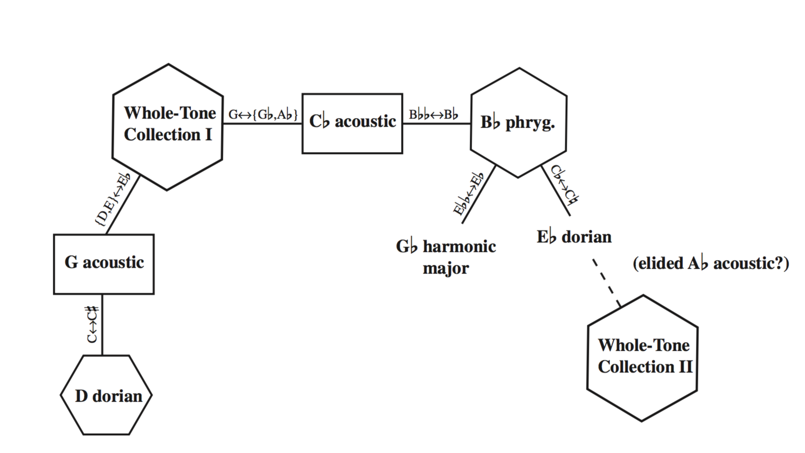
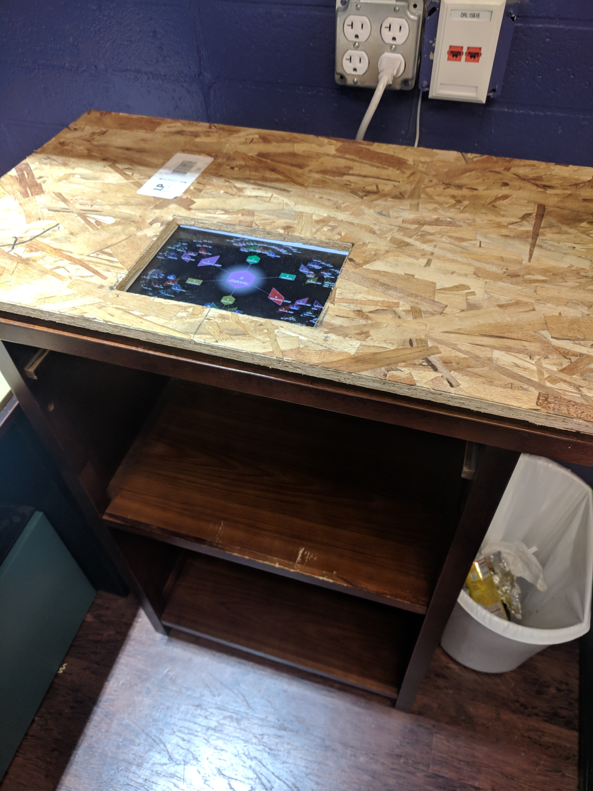
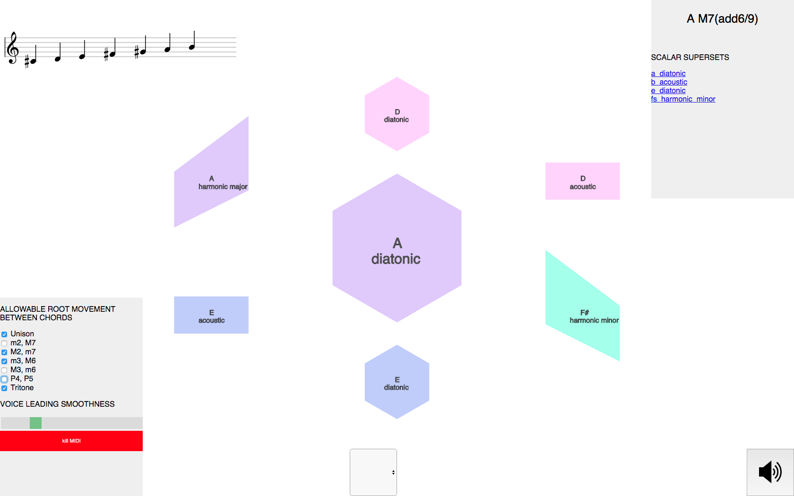
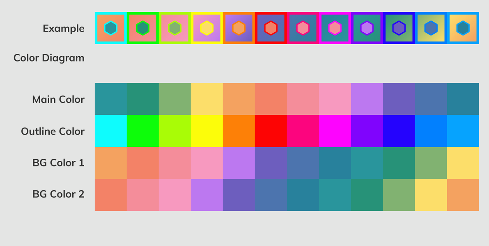
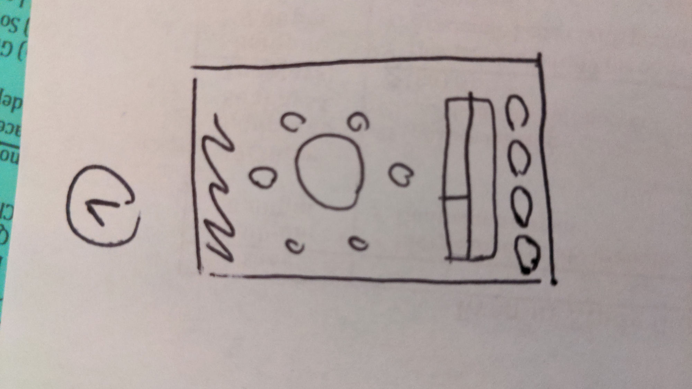
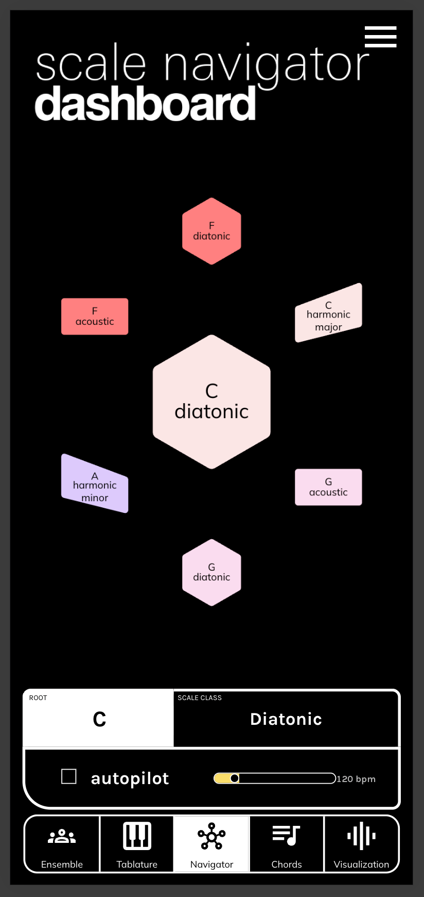
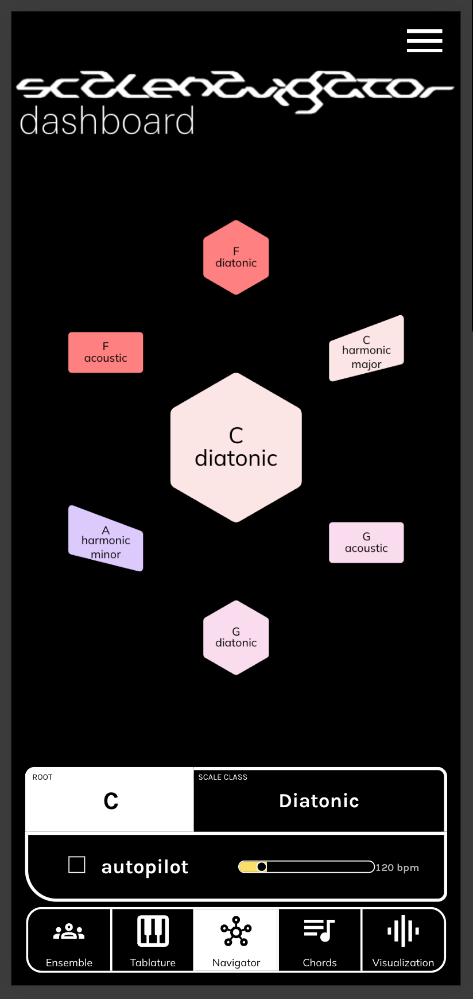

Scale Navigator Dashboard
Role · Product designer & developer
Platforms · Web · iOS · Android · macOS/Windows · VST3/AU/AAX
Problem
When I compose, I'm weighing chord-scale relationships: what melodies fit inside what harmonies, where the bass goes, how to voice things. I can stop, try a few options, and hear where they lead.
When I improvise, I have to decide in real time.
What if the interface where I make that decision is itself a map of where harmony can go?
That's the idea behind Scale Navigator Dashboard: a network of 57 scales where neighbors differ by only one note, so the nearby possibilities are always in view. The constraint: it had to work while someone was making music, not after.

The Dashboard today. The center is where you are; everything touching it is one note away.
Insight
It started with Dmitri Tymoczko's scale-network research, especially a figure analyzing a Debussy prelude as a walk through neighboring scales. Here was a geometrical description of a famous harmonic language, and it read to me like a design spec. I wanted to build the car, drive it fast, take it to its logical conclusion: make it interactive, and then hand other people the keys.

The figure that became a spec: Debussy moving scale to scale, one collection at a time. Hexagons and rectangles already encode scale type.
Prototype
Keys 1 through 6
The first build, summer 2018, was a p5.js sketch you steered with the number keys: press 1 through 6 to move to a neighboring scale, and the whole network re-orbits around your new position. I was a composition MFA at CalArts who could barely program, so Dexter Shepherd and Colin Honigman paired with me twice a week: I drove the design decisions, they taught me to write the code underneath them.

The 2018 prototype. Bottom right, the entire interface manual: "Type on your keyboard: 1 through 6 to navigate the scale network."
Navigation in motion: each keypress re-centers the network on the chosen scale.
The prototype went in front of audiences almost immediately: Modal Intersections in October 2018 (an etude book written for the system, including Dexter's ROUNDABOUT), INTERSTICES that December, Thought Loops in January 2019, and a paper at NIME 2019 in Porto Alegre.


Modal Intersections, October 2018: the network projected over a live ensemble in the prototype's first year.
I surveyed the INTERSTICES performers afterward. One wrote that "a highlight indicating which note has changed would be helpful," a request that grew into its own project, Notation Anticipation. Another wrote that the music came out sounding "more like a scale exercise." That one stung because it was accurate: the system could move through harmony, but it couldn't yet make anything worth keeping.
Iteration
An instrument before a product
Through 2019 and 2020 the sketch grew into an instrument. A chord generator (first commit January 10, 2019) turned each scale into playable harmony, ranked by voice-leading smoothness. The visual language settled into something I still use: shape encodes how a scale connects (hexagons, rectangles, and parallelograms for the different scale classes), and color encodes the root. Controls appeared for allowable root movement and a smoothness slider, and Web MIDI sent the output through an IAC bus into a DAW: harmony was already trying to live at the center of the session.


The 2020 instrument era. Notice the voice-leading smoothness slider, the root-movement checkboxes, and the IAC MIDI output at bottom: the ideas that later became the plugin.
Going all-in
Outside my day job, I went all-in on the tool. In July 2021 I rebuilt it as a React app (first commit July 23, 2021), with Michael Maurer shaping the early architecture and Ondřej Sedláček as the first contracted engineer. The interaction spec fit on a Post-it: your scale in the middle, its neighbors around it, and one neighbor already unfolding into its own neighborhood.

The interaction spec, complete: where you are, where you can go, and where you could go after that.
Two critiques, one weekend
At the time I was contracting at Output, where Arthur Carabott led interface design. I cold-emailed him asking for a critique, and on the call (August 20, 2021) he gave me two pieces of feedback that took years to fully address:
"Once I've found a chord I like, I want to be able to actually learn that, or save it. At the moment it is very easy to just keep clicking and lose what I had."
"It's the difference between someone demonstrating something on stage, vs a teacher helping you learn it."
The tool was good for wandering but bad for composing. The very next day, Tristan Whitehill's QA report wrote the same problem down independently. That weekend I sketched a "Notepad" workspace where discoveries could be kept and arranged.

The Notepad wireframe, drawn the weekend of Arthur's critique. It shipped as the Score workspace in February 2026, four and a half years later.
Visual identity
That August I brought in Jono and Dylan Freeman with Jason Gardinier for a brand engagement: a pitch-class color system built on the circle of fifths, type explorations across six licensed specimens, and competing brand directions. The black-and-yellow direction won. I kept the script "Dashboard" wordmark over their objection, a call I'd reverse years later.

The pitch-class color system, August 2021: every root gets one color, everywhere in the product.
Mobile came from pen sketches of how the network could squish onto a phone.


Pen sketch to shipped Android build (October 2022): the same center-plus-neighbors layout, squished to one thumb.
Later critiques that shipped
Ben Tillotson (December 30, 2025) gave me two things in one session: proof of demand for a DAW plugin, and the observation that the root colors had gone washed-out and illegible. I spent a full day back in color space re-saturating the palette. Lily Clark (January 2026) pushed for hard edges and a plain wordmark, which finally retired the 2021 script logo.


Two 2026 wordmark directions. The plain one (left) won.
Failure
The feature that took four years
Chord MIDI routing, the ability to send the chords you click to any port, channel, and octave, was specced in November 2021: a pen wireframe I'd sketched days earlier, photographed and handed off. Michael Maurer shipped the routing UI within 48 hours, but only scale-note output ever worked behind it. The dropdown was supposed to offer every MIDI type the system knows (chord root, chord prime form, chord voicing, scale root), and I couldn't figure out how to get them populating in React, so for years the panel routed scale notes and nothing else. Over the next four years I hired several engineers against the problem, and none of that work merged. I finally fixed it myself on November 1, 2025, right after leaving my job to build the product solo.

The November 2021 MIDI-output wireframe. The UI shipped in 48 hours; the behavior took four years.
Final solution
Where harmony should live
Harmony should live at the center of your compositional and production workflow, not in a browser tab and not duplicated inside every plugin. So I rebuilt Dashboard as a VST3/AU/AAX plugin with automatable parameters: change the scale at bar 32 and the automation lane remembers. Every other Scale Navigator tool subscribes to that state, which makes Dashboard one interface that tells the rest of the session what the harmony is.
The Score and Sketchpad workspaces, shipped February and March 2026, are the long-delayed answer to Arthur's two questions: you explore the network, find something you like, and drag it into a progression you can keep, replay, and learn from. I emailed Arthur in 2026 to tell him the sketchpad finally existed. He'd moved to Splice by then and was writing a book on music UI.

The Score workspace, February 2026: the 2021 Notepad wireframe shipped. Saved scales run above the staves, and the progression exports to MIDI, LilyPond, or PDF.

The Sketchpad, March 2026: harmonic states saved as cards on a freeform canvas. Each card keeps its scale-class shape and root color from the network.


Visualization and Chord tabs. The 2020 instrument's checkboxes and smoothness slider survive, redesigned, in the right column.


Tablature renders the harmony onto real instruments in root colors; the Ensemble tab opens the harmonic state to other players in real time.
Some decisions stayed as toggles. Users gravitate toward the 3D layout, but the flat 2D layout reveals the circle of fifths as just one pathway through the larger network, so both remain. Early users expected clockwise rotation to mean flats; Tymoczko preferred the opposite; there's a toggle.
iOS and Android apps carry the exploration side away from the computer.


Outcome
A moderated usability test with Elvis Bates (March 23, 2026) shaped the current onboarding work: the interface still assumes you already know what the shapes mean, and first-time users need a guided path that teaches the network by having them use it. That remains the open problem.
Since the iOS launch in March 2026: 272 downloads and a 12% App Store conversion rate, above the 75th percentile for music apps. Composer Miša Skalskis called it "probably the first midi generator that I actually enjoyed."
Demo: navigating the network, generating chords, and sending the harmony to the rest of the session.
Credits
Built on Dmitri Tymoczko's research (NIME 2019). Dexter Shepherd, Colin Honigman, and Nathan Ho mentored the first prototype; Michael Maurer shaped the early React architecture; Ondřej Sedláček, Netanel Ben, and Brady Boettcher contributed engineering; Jono Freeman, Dylan Freeman, and Jason Gardinier built the color and brand system; Lily Clark refined the 2026 identity; Arthur Carabott, Ben Tillotson, and Lachlan gave the critiques that shipped; Elvis Bates sat for usability testing. The app ships a full credits screen.
Related work
Tonalign — the same scale state, enforced on live MIDI
Ensemble Jammer — networked instruments that follow Dashboard's harmony
NotesChordScales — the inverse direction: play notes, and the system infers the scale
SNaPS — a sampler that glides its samples to match the scale